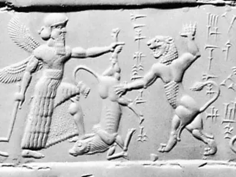

Beutiful Paintings

Cylinder seal
Cylinder seal, small stone cylinder engraved in intaglio on its surface to leave impressions when rolled on wet clay. Cylinder seals are characteristic artifacts of ancient Mesopotamian civilization and are considered some of its finest artistic achievements.

Tomb of Pope Julius II
The Tomb of Pope Julius II is a sculptural and architectural ensemble by Michelangelo and his assistants, originally commissioned in 1505 but not completed until 1545 on a much reduced scale.

The Dying Gaul
The Dying Gladiator, is an ancient Roman marble semi-recumbent statue now in the Capitoline Museums in Rome. It is a copy of a now lost Greek sculpture from the Hellenistic period (323-31 BC) thought to have been made in bronze